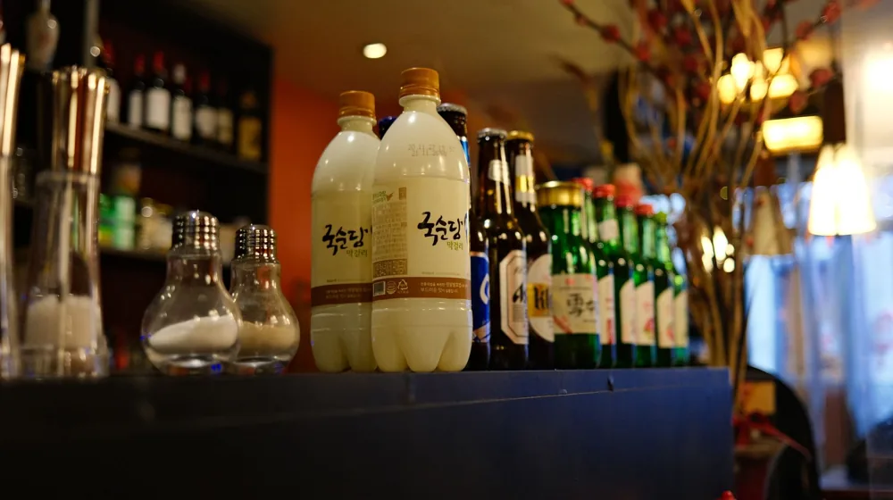

가양주 vs 시판 막걸리, 알고 마시면 더 맛있는 차이점 3가지
사진: Quang Nguyen Vinh / Pexels (무료 이미지, 출처 표기)
가양주와 시판 막걸리, 겉보기엔 같아도 속은 다릅니다

집에서 직접 빚는 가양주(家釀酒)와 슈퍼마켓에서 쉽게 구할 수 있는 시판 막걸리, 겉모습은 비슷해 보여도 그 안에 담긴 전통과 제조 방식, 그리고 맛은 전혀 다릅니다. 이 글은 두 막걸리의 핵심적인 차이점을 명확히 비교하여, 어떤 막걸리가 당신의 취향에 더 맞을지 판단하는 데 도움을 드릴 것입니다.
단순히 술 한 잔을 넘어, 한국 전통주의 깊은 세계를 이해하는 데 필요한 실용적인 정보들을 지금부터 확인해 보세요.
'가양주'란 무엇인가? 시판 막걸리와의 기본 개념 차이
가양주는 '집 가(家)'에 '빚을 양(釀)'을 써서 글자 그대로 '집에서 빚는 술'을 의미합니다. 오랜 옛날부터 각 가정에서 전해 내려오던 전통 방식으로, 주로 쌀, 누룩, 물만을 사용하여 빚습니다. 가양주는 대량 생산보다는 개성을 중시하며, 빚는 사람의 정성과 노하우에 따라 맛이 달라지는 것이 특징입니다.
반면, 시판 막걸리는 산업화된 주류 제조 과정을 거쳐 대량으로 생산됩니다. 유통과 보관의 편의성을 고려해 표준화된 맛과 품질을 유지하며, 주점이나 마트 등 어디에서나 쉽게 구매할 수 있습니다. 가양주가 '수제 예술품'에 가깝다면, 시판 막걸리는 '대중적인 음료'에 비유할 수 있습니다.
주원료와 발효 방식: 맛의 근본을 가르는 핵심
가양주와 시판 막걸리의 맛이 달라지는 가장 큰 이유는 주원료의 선택과 발효 방식에 있습니다. 이 두 요소가 술의 풍미, 향, 질감을 결정하는 근본적인 차이를 만들어냅니다.
가양주는 전통 누룩에 있는 다양한 미생물이 쌀과 함께 복합적인 발효를 일으켜 깊고 다채로운 풍미를 냅니다. 반면, 시판 막걸리는 대량 생산에 유리하도록 발효 효율이 높은 개량 누룩과 효모를 주로 사용하며, 일정한 맛을 유지하기 위해 첨가물을 활용하기도 합니다.
맛과 향, 그리고 보관 방법의 결정적 차이
원료와 발효 방식의 차이는 최종적인 맛과 향, 그리고 보관 방식에도 큰 영향을 미칩니다.
맛과 향의 특징
- 가양주: 복합적인 단맛과 신맛의 조화, 묵직하고 깊은 바디감, 곡물 특유의 구수한 향과 누룩 향이 풍부합니다. 때로는 과일이나 꽃 향이 느껴지기도 하며, 시간이 지남에 따라 맛이 미묘하게 변하는 특징이 있습니다. 효모와 유산균이 살아있어 발효가 진행 중인 경우도 많습니다.
- 시판 막걸리: 대체로 깔끔하고 균일한 단맛과 청량감이 특징입니다. 대중적인 입맛에 맞춰 개발되어 특정한 향보다는 부드러운 목 넘김과 가벼운 느낌을 줍니다. 살균 막걸리는 맛의 변화가 거의 없으며, 생 막걸리는 유통기한 내에 효모 활동으로 인한 미세한 맛 변화가 있을 수 있습니다.
보관 및 유통기한
가양주는 대부분 살균 처리를 하지 않은 '생주'이기 때문에, 냉장 보관이 필수이며 유통기한이 비교적 짧습니다. 보통 10일에서 한 달 이내에 마시는 것이 좋습니다. 발효가 계속 진행되므로, 보관 환경에 따라 맛이 숙성되거나 변질될 수 있습니다.
시판 막걸리는 '살균 막걸리'와 '생 막걸리'로 나뉩니다. 살균 막걸리는 고온 살균 처리되어 상온 보관이 가능하고 유통기한이 깁니다(수개월~1년). 생 막걸리는 효모가 살아있어 냉장 보관해야 하며, 유통기한은 가양주와 비슷한 수준인 10일~한 달 정도입니다.
어떤 막걸리가 나에게 맞을까? 선택 가이드
가양주와 시판 막걸리는 각각의 매력이 뚜렷하므로, 자신의 취향과 상황에 맞춰 선택하는 것이 중요합니다.
- 깊고 복합적인 맛과 전통의 가치를 중시한다면: 가양주나 소규모 양조장에서 생산되는 전통주를 찾아보세요. 특정 양조장이나 빚는 사람의 개성이 담긴 술을 맛보는 특별한 경험을 할 수 있습니다.
- 일상에서 편하게 즐기고 싶다면: 다양한 시판 막걸리를 시도해 보세요. 대형 마트나 편의점에서 쉽게 구할 수 있으며, 각 브랜드마다 고유의 맛과 콘셉트가 있습니다. 먼저 여러 종류를 맛보며 본인에게 맞는 스타일을 찾는 것을 추천합니다.
- 막걸리 빚기에 관심이 있다면: 가양주 체험 클래스에 참여하거나, 관련 서적을 통해 직접 빚는 법을 배워보는 것도 좋습니다. '우리술 교육원'이나 '한국가양주연구소' 같은 전문 기관에서 체계적인 교육을 받을 수도 있습니다.
어떤 선택이든, 막걸리의 세계는 무궁무진합니다. 당신의 취향을 찾아가는 즐거운 여정이 되기를 바랍니다.
직접 빚는 가양주, 이것부터 확인하세요
가양주 빚기는 단순한 취미를 넘어 한국 전통문화를 경험하는 의미 있는 활동입니다. 초보자도 쉽게 시작할 수 있는 막걸리 빚기 키트도 시중에 많이 나와 있지만, 성공적인 가양주를 위해서는 몇 가지 기본적인 사항을 알아두는 것이 좋습니다.
- 위생: 술을 빚는 모든 도구와 손은 철저하게 소독하고 청결하게 유지해야 합니다. 잡균이 들어가면 술이 변질될 수 있기 때문입니다.
- 온도 관리: 발효 과정에서 온도는 매우 중요합니다. 적절한 온도에서 발효시켜야 효모가 활발하게 활동하며 좋은 술맛을 낼 수 있습니다. 보통 20~25°C가 적당하지만, 술의 종류에 따라 다를 수 있습니다.
- 정확한 레시피: 처음에는 검증된 레시피를 따르는 것이 좋습니다. 쌀과 누룩, 물의 비율을 정확히 지키고, 발효 기간을 준수해야 실패 확률을 줄일 수 있습니다.
- 지속적인 관심: 술이 잘 익고 있는지 주기적으로 확인하고, 필요에 따라 저어주는 등의 관리가 필요합니다.
가양주 빚기에 대한 더 자세하고 정확한 정보는 '농림축산식품부' 산하 '한국전통주진흥원'이나 '전통주갤러리' 등의 공식 기관에서 제공하는 교육 프로그램이나 자료를 참고하시길 권장합니다. 2024년 8월 기준으로 많은 교육 기관에서 초보자를 위한 강좌를 운영하고 있습니다.
🔗 이 글도 함께 보면 좋아요: 코스피 하락, 불안한 투자자라면 꼭 알아야 할 3가지 핵심 원인
관련 추천 상품
막걸리 키트, 누룩, 막걸리잔 관련 인기 상품 보러가기
이 포스팅은 쿠팡 파트너스 활동의 일환으로, 이에 따른 일정액의 수수료를 제공받습니다.